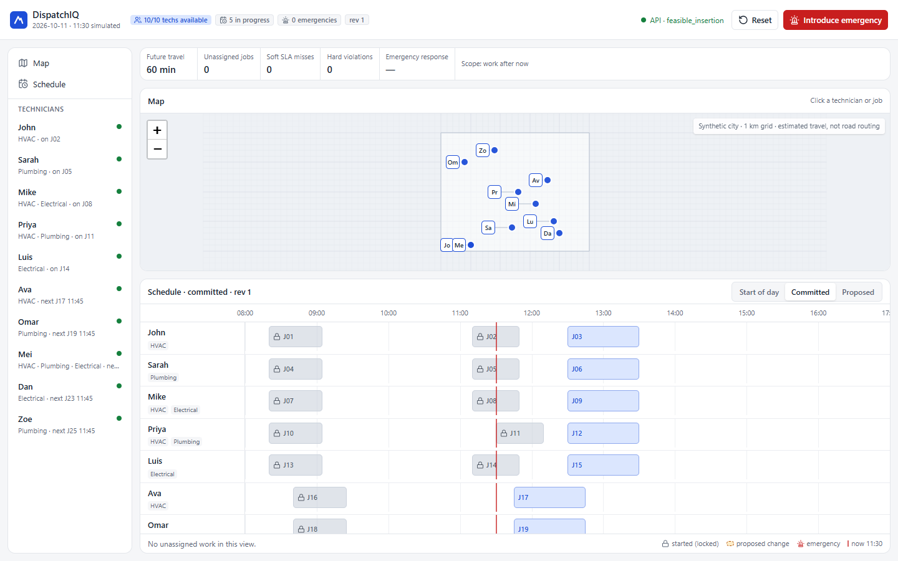
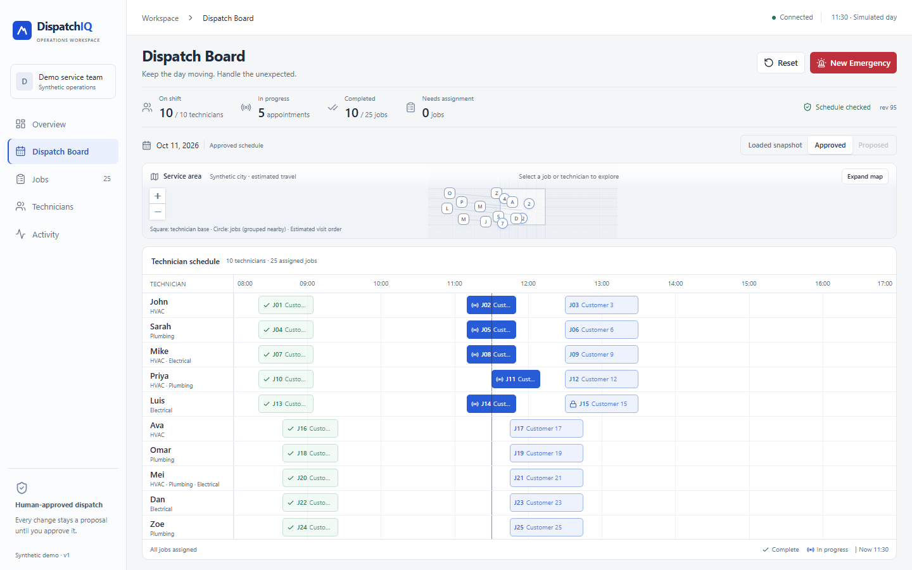
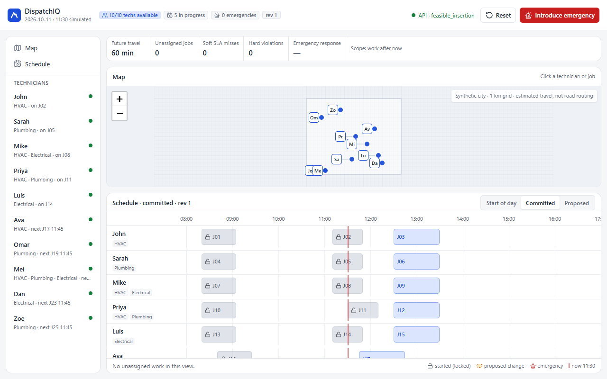
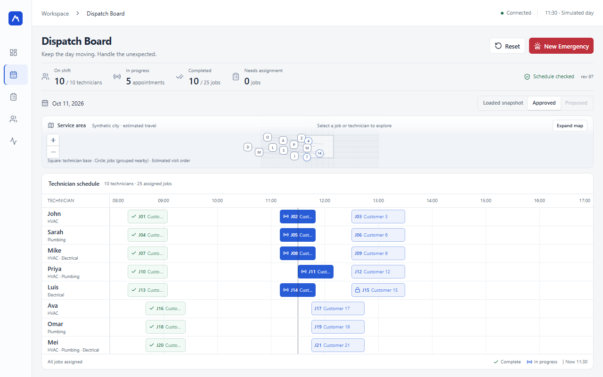
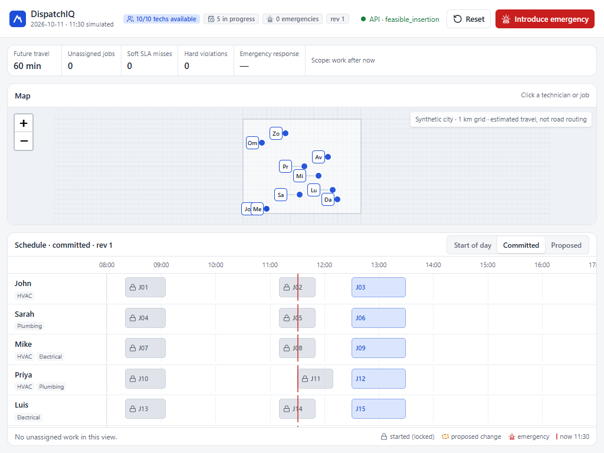
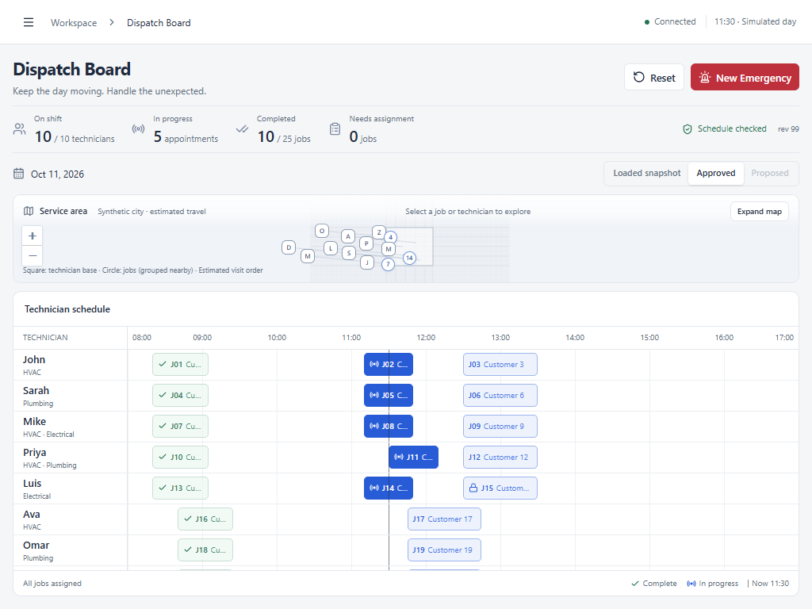
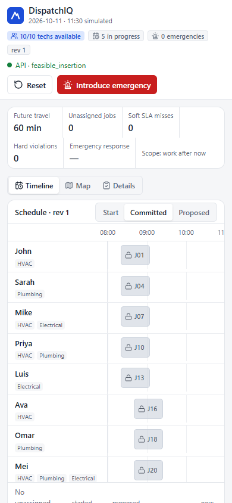
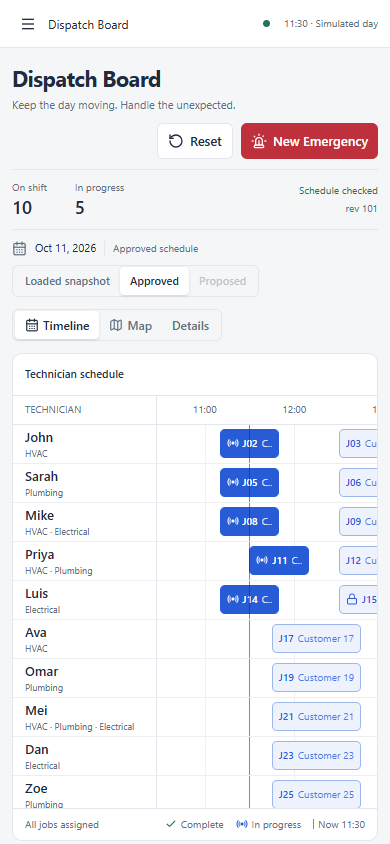
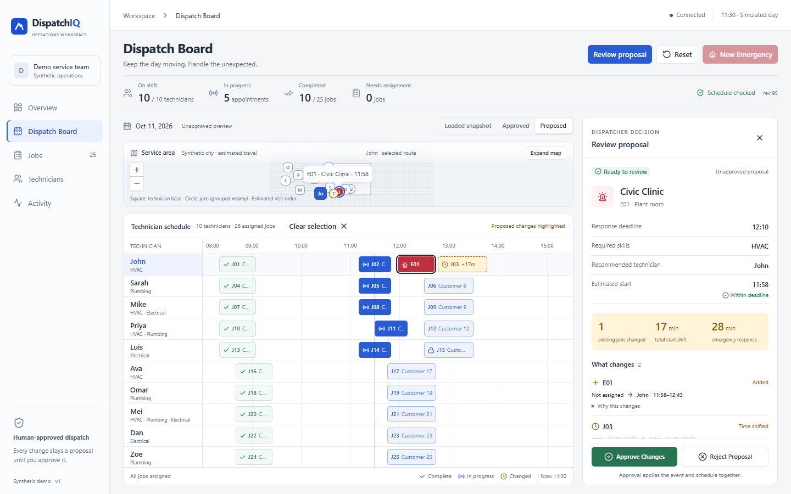
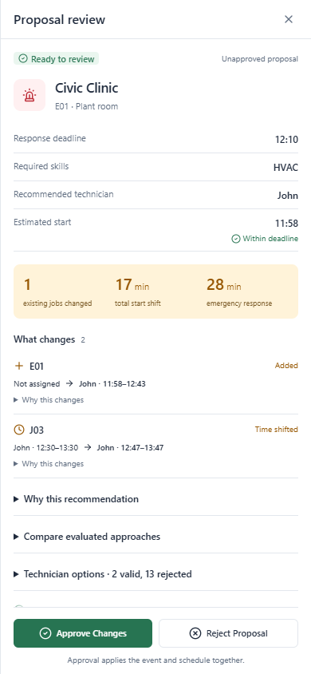

Actual browser captures of the API-connected application. Before and after show the same synthetic daily fixture; revisions differ because acceptance tests reset an isolated service. Design audit · Verification and limits









